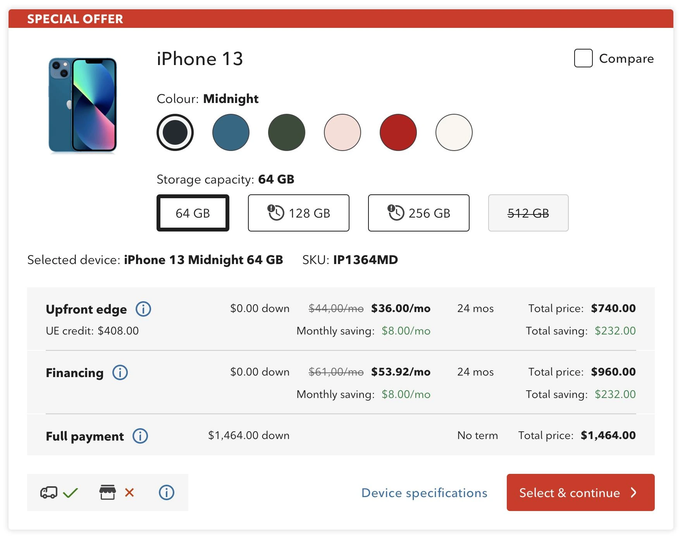
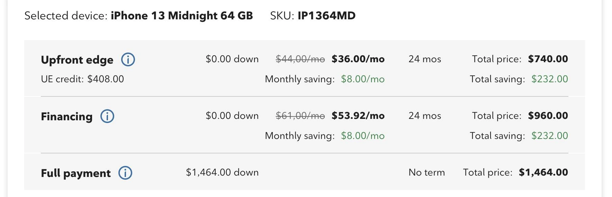
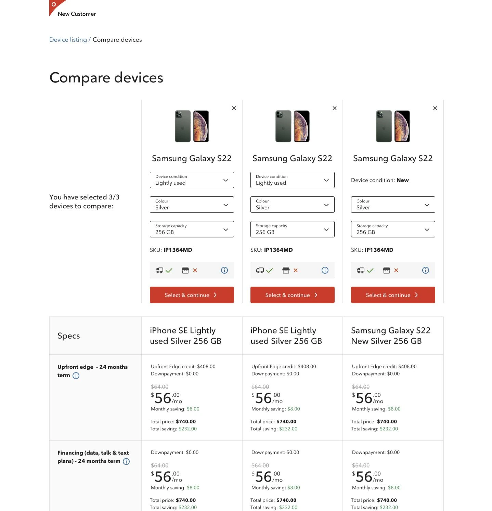

Rogers Communications · Telecom, via EPAM
OneView: cutting the sales rep's cognitive load — 25% less time-on-task, 80% fewer errors

Across the OneView redesign · 2022 – 2024
The tool was the slowest part of the conversation. A rep was on the phone with a customer, and OneView made them work around it.
The multi-line device buy flow had too many clicks and too much on-screen complexity, and its payment logic pushed reps back and forth — or into a second system entirely — in the middle of a live call. Every interaction ran longer than it needed to, error rates climbed, and a new agent took weeks to become useful. I joined as Experience Designer on the EPAM engagement, owning the redesign across research, IA, interaction design and accessibility with product, engineering and Rogers stakeholders.
I started with who the rep is serving — and with what the interface was making them do that no one had asked for.
Shoppers arrive product-focused or price-focused, and they want different things first, so the two were mapped and ranked separately before any layout existed. That ran alongside a plain audit of the current flow — competitor references, annotated wireframes, and a wall of open questions about why the navigation was shaped the way it was. Deciding what reps do not need turned out to matter as much as deciding what they do.
Every element on the tile had to earn its space — and the biggest one on the old design had not been earning it.
Research showed reps barely used the large product photo, so it shrank to a compact visual anchor and the space went back to what they act on. Reps also open every conversation at the lowest price point, so the cheapest storage option is preselected rather than chosen again on each call, and the line above the payment table restates the exact device and its SKU, updating live as options change — the rep can read the customer their configuration without looking it up.
Then the part that carried the highest load: one payment decision, in one place, with the maths already done.
Payment options had been scattered, and comparing them meant leaving the flow or opening another system while the customer waited. I merged them into a single view — money down, monthly price, term and total side by side — and had the interface calculate the saving rather than making the rep work it out mid-sentence. It shows more at once than the old screen did, which was the deliberate trade: more on the page, far less switching between pages.

Depth stayed one click away instead of one system away.
Reps get asked detailed questions, and the old answer was to go and look somewhere else. So specifications open in a full-screen modal over the flow, up to three devices can be compared side by side against a shared spec table, and stock is stated separately for standard delivery and in-store pickup. I also cut the marketing copy out of the device descriptions — reps did not use it, and it was expensive to keep current.

Accessibility audits turned out to be error-rate work.
I ran accessibility audits across the flow and implemented the WCAG fixes — and clearer focus, structure and labelling removed a large share of the interaction errors the old flow produced for every rep, not only for those using assistive technology. Alongside it, simplifying the information architecture and cutting steps brought the flow into the real sequence of a sales conversation, which is what took a new agent from three weeks to one.
Also part of the work
- Competitive analysis of how other carriers handle device selection, pricing and comparison — used to argue for the consolidated payment view rather than to copy a layout.
- Responsive design across the buy journey, so the flow held up on the range of screens reps actually work on.
- UX writing through the flow, including the tooltips that explain each payment term — written for a new rep who has to sound certain on their first call.
- Design-system work: the tile, comparison and payment patterns were built to be reused across OneView instead of living only in this flow.
The result: 25% less time-on-task, an 80% drop in user error rate, and new-agent onboarding cut from three weeks to one.
The work earned the “Customer Centered” badge twice and a 3.9/4 stakeholder rating. The part I care about more: reps could hold the customer conversation inside one coherent flow instead of working around the tool. Looking back, I would have pushed to instrument the flow earlier — we proved the redesign after the fact, and continuous measurement would have let us settle several arguments while they were still cheap to settle.
UX research · information architecture · interaction & responsive design · design systems · UX writing · competitive analysis · WCAG accessibility audits · prototyping
Let's talk
Open to senior product-design roles across Poland — hybrid or remote, B2B or employment contract.